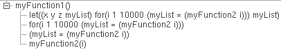

Tracing the Error
The error message that displays in CIW indicates that myFunction2 expects two arguments and only one argument is passed:
***Error in routine myFunction2:
Message: *Error* myFunction2: too few arguments (2 expected, 1 given) - (1)
The debugger stops at line number 12 and highlights it in red:
myList = myFunction2(i)
Examining the Call Stack to Trace the Error
To find which function called myFunction2 with the wrong number of arguments, do the following:
-
Choose Window – Assistants – Stack. The Stack assistant displays the current call stack.
The call toerrorHandleris at the bottom of the call stack frame; the call tomyFunction1is at the top. - Click or choose Debug – Stop All Debugging to terminate debugging.
Related Topics
SKILL IDE Debugger Example File
Loading and Running the Example File
Using Breakpoints to Find and Correct a Functional Error
Return to top